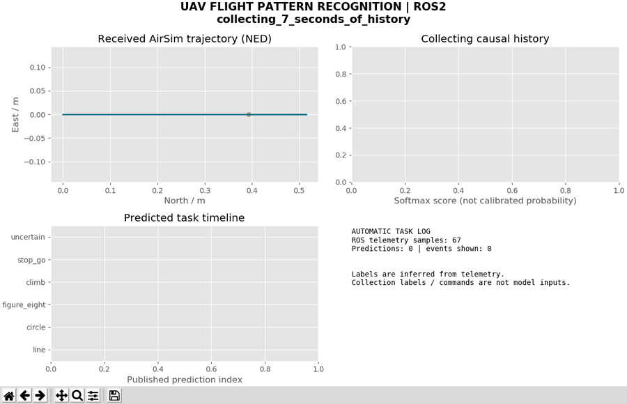
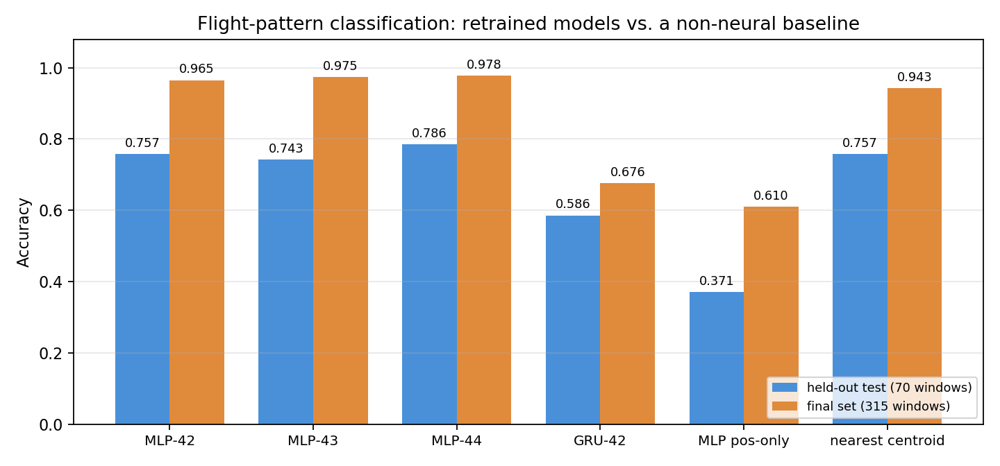
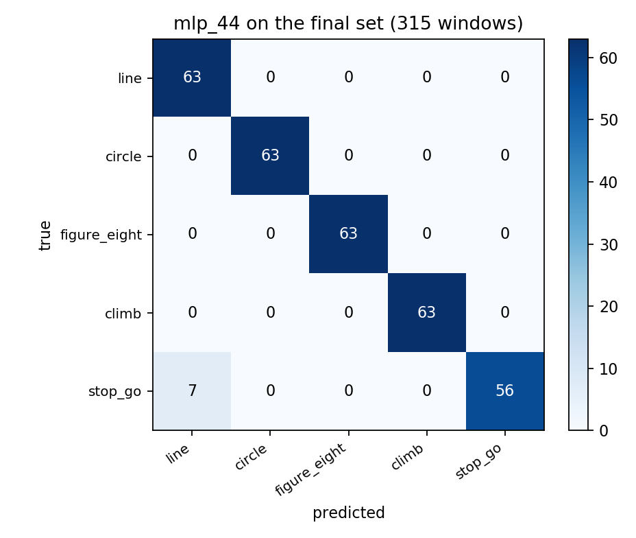
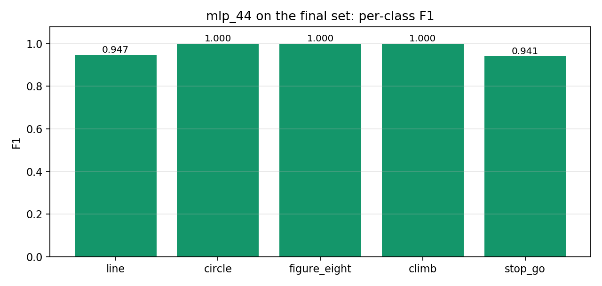

无人机飞行轨迹类型识别与 ROS2 自动任务日志
本页记录一个可独立复现的飞行轨迹分类实验：用过去 6 秒的飞行遥测，识别无人机当前在执行 五类轨迹中的哪一类，并在 ROS2 中把稳定的识别结果转成任务事件。
模型不是序列到序列的黑箱：先从遥测里抽出 8 个有物理含义的几何特征，再在时间维上取均值与标准差，最后过一个 MLP。GRU 作为序列模型对照，放在同一份数据上比较。
全部数字都在本机重跑过，包括重训结果与仓库随附权重逐位一致的验证（第 7.5 节）。

上图为 ros2 实跑窗口：左侧是收到的轨迹，右上是五类的 softmax 输出，左下是识别时间线，右下是自动任务日志。回放 episode_300（直线）与 episode_302（8 字），两段之间触发一次任务事件。
1. 任务定义与设计取舍
输入：最近 6 秒遥测（10 Hz 采样，61 帧），每帧取位置、速度、加速度共 9 个分量。
输出：五类之一 line / circle / figure_eight / climb / stop_go，或 uncertain（置信度不足时）。
约束：采集时的标签与命令不进入模型输入。识别节点只读取观测流，这一点由代码结构保证，见第 3.4 节。
三个关键取舍：
| 取舍 | 选择 | 理由 |
|---|---|---|
| 特征 vs 端到端 | 先抽 8 个几何特征，再分类 | 训练窗口只有 280 个；直接喂 61×9 原始序列，参数一多就过拟合。几何特征把"转弯有多急""走了多远"显式化，小样本下更稳 |
| 分类器 | MLP（16→32→5） | 特征已在时间维聚合，序列信息被压成统计量，不需要再堆循环层 |
| 序列对照 | 独立训练的 GRU(8→32) | 用来回答"时序建模是否必要"，而不是拿来当主模型 |
1.1 与相邻项目的边界
| 方向 | 输入 / 输出 | 本项目区别 |
|---|---|---|
| 状态预测（PR #121） | 历史状态 → 未来位置、速度 | 本项目输出离散轨迹类型 |
| 遥测异常检测（PR #138） | 状态 → 异常分数、告警 | 本项目训练正常任务类别，不注入故障 |
| 避障、PPO 导航、PID 跟踪 | 感知/目标 → 控制动作 | 分类与日志节点不发送飞行控制指令 |
| YOLO 图像检测 | 图像 → 目标框 | 本项目只使用飞行遥测 |
2026-10-02 曾核查 OpenHUTB 主分支目录及最近 100 个 PR 的标题与范围，未发现相同的轨迹分类与任务日志模块；这不代表其他仓库不存在相关研究。上游基线为 c10e1331a5b24dd2d9a0d37bafe91cecdb5ae92b。
1.2 功能与入口
main.py 是统一入口，main.sh 负责加载 ROS 环境与虚拟环境：
| 阶段 | 入口 | 输出 |
|---|---|---|
| 自检 | bash main.sh doctor |
artifacts/environment.json |
| 数据准备 | python main.py prepare |
data/prepared/*.npz、manifest.json |
| 训练 | python main.py train --variant mlp --seed 42 --output models/x |
model.pt、config.json、loss.json |
| 复现 | python reproduce.py --output models/retrained_run |
5 个模型 + 2 份评估 |
| 评估 | python main.py evaluate --split final |
results/*.json、*_predictions.csv |
| 构建 | bash main.sh build |
install/、build/、log/ |
| ROS2 回放 | bash main.sh demo "<csv;csv>" |
三个话题 + 看板 |
| 看板 | python main.py dashboard |
Tk 窗口 |
2. 运行环境与快速开始
2.1 环境
| 项 | 配置 |
|---|---|
| 系统 | Ubuntu 20.04.6，6 核 / 8.5 GB |
| ROS | ROS2 Humble（/opt/ros/humble，为 Python 3.8 构建） |
| Python | 3.8.10，venv --system-site-packages |
| 深度学习 | PyTorch 2.4.1+cpu，numpy 1.24.4，matplotlib 3.1.2 |
| 数据来源 | AirSim 1.8.1（Blocks 场景）录制，随模块附 30 段 + 15 段语料 |
2.2 安装与自检
cd ~/ros2/src/air/flight_pattern_recognition
source /opt/ros/humble/setup.bash
/usr/bin/python3 -m venv --system-site-packages ~/uav_prediction_env
source ~/uav_prediction_env/bin/activate
python -m pip install -r requirements.txt
bash main.sh doctor # 12 个必需模块逐一导入，缺一个就退出
bash main.sh build
doctor 会打印实际解释器并写入 artifacts/environment.json；不通过时直接报错，不会带着残缺环境继续。
安装时的四个常见问题：
ensurepip缺失：先sudo apt install python3.8-venv；- 没有图形窗口：看板依赖 Tk，需要
python3-tk； doctor报launch_ros: No module named 'lark'：在模块目录、已激活的 venv 里重跑pip install -r requirements.txt，依赖表已含lark==1.1.9；- Conda 环境冲突：Conda 的
python3无法导入 ROS2，另建基于/usr/bin/python3的 venv。
虚拟环境优先级：UAV_ENV > 当前 VIRTUAL_ENV > ~/uav_prediction_env；ROS_SETUP 可覆盖 ROS 发行版的 setup 文件。换目录重建时旧的 build/、install/、log/ 不要复制过来。
2.3 跑通回放
python main.py prepare # 首次运行：解压语料、校验哈希、生成窗口
bash main.sh demo "$PWD/data/final_raw/episode_300.csv;$PWD/data/final_raw/episode_302.csv"
main.sh demo 走 ros2 launch，起两个可执行文件：pattern_replay（节点名 flight_pattern_replay，按时间戳回放）与 pattern_recognizer（节点名 flight_pattern_recognizer，负责识别）。看板是独立进程，另开一个终端：
python main.py dashboard
看板不在 launch 里，是为了让识别链路可以脱离图形界面运行——没有显示器的机器只订阅话题即可。先开看板再起 demo：五段回放（episode_300～304）约 95 秒后自然结束，回放进程退出会连带关停识别节点。
2.4 采集与实时接入（可选）
重新采集才需要 AirSim 客户端：
python -m pip install -r requirements_airsim.txt
python collect_final.py --host <AirSim 主机 IP> --start 400 --episodes 5 --output data/new_collection
collect_final.py 会真正控制仿真无人机，含碰撞、区域边界、起点稳定与降落确认；采集器拒绝覆盖已有文件。新增数据不属于随附最终测试集，若用于训练需要重新设计完整划分并保留新的未见测试集。
config/airsim_settings.json 里的主机地址与载具名是示例值，换机器必须按实际配置修改。回放、推理与只读桥接都不下发飞控指令。
只读实时桥接（读正在运行的 AirSim，不控制）：
python main.py live --ros-args -p host:=192.168.239.1 -p vehicle:=PredictionDrone
ros2 run flight_pattern_recognition pattern_recognizer --ros-args \
-p model:="$PWD/models/mlp_42" -p log:="$PWD/results/live_predictions.jsonl"
飞行本身需要独立控制器。五类训练数据不覆盖起飞、降落、悬停、故障等阶段，这些阶段的输出没有准确性保证。
2.5 验证边界
本页所有数据来自 AirSim Blocks 场景、规则小范围轨迹、SimpleFlight 控制器，尚未在 OpenHUTB 模拟器上重新采集。把这里的准确率套到别的场景或真实无人机上不成立。
3. 数据、标签与防泄漏
3.1 原始字段
每段飞行一个 CSV，逐行记录 timestamp_ns、位置 px/py/pz、速度 vx/vy/vz、加速度 ax/ay/az（世界 NED，m 与 m/s、m/s²）。标签来自采集时执行的轨迹家族，记录在对应的 JSON 里。
数据来自实际运行的 AirSim getMultirotorState，随模块保存 CSV、采集参数、时间戳与 SHA256——不是按轨迹方程直接生成的理想状态。轨迹方程只用于生成控制目标，数据里包含仿真飞行控制器的实际响应。
五个标签对应采集任务家族，含义如下：
| 标签 | 采集任务含义 |
|---|---|
line |
水平直线往返，正弦速度变化 |
circle |
水平圆形轨迹 |
figure_eight |
水平八字轨迹 |
climb |
水平位移伴随周期性升降，不是单向爬升 |
stop_go |
平滑停留/换向，不是硬切换停车 |
后两条容易被字面意思误导：climb 并非一直向上，stop_go 也不是急停急走。
3.2 窗口构造
对每段飞行，从第 7 秒开始，每 0.5 秒取一个窗口：
- 取窗口末端往前 6.0 s 的观测；
- 在
[-6, 0]秒上等间隔取 61 个点（10 Hz），逐通道线性插值； - 计算 8 个几何特征（第 4.1 节）。
跳过前 7 秒是为了避开采集开始时的悬停与加速瞬态——这一点写在代码注释里，也是 config.json 里 warmup_s=7 的来源。
采样间隔超过 150 ms、时间戳非单调、含非有限值的窗口直接丢弃。
这 8 个特征对整体平移与绕竖直轴旋转不变（只用到相对位移与水平分量），但不对所有飞行速度或姿态变化不变——速度大小、转弯急缓、升降幅度都会改变特征值，这正是分类所依赖的。
3.3 数据划分
| 集合 | 回合 | 每类 | 窗口 | 用途 |
|---|---|---|---|---|
训练（000–019） |
20 | 4 | 280 | 拟合权重与标准化参数 |
验证（020–024） |
5 | 1 | 70 | 选权重、定置信阈值 |
保留测试（025–029） |
5 | 1 | 70 | 只报告，不参与任何选择 |
最终测试（300–314） |
15 | 3 | 315 | 冻结模型后另采，每类 3 次 |
旧语料 30 段共 8,430 条状态，最终测试 15 段共 5,416 条，合计 13,846 条有效状态。
final 集是另外 15 段飞行，与前三集在回合 ID 与文件 SHA256 上都无交集，且每类恰好 3 段——prepare_final.py 会对这两条做断言，不满足就报错。
采集过程中有一段被质量规则拒绝：第 308 段首次采集出现重复时间戳与 0.576 秒停顿，按规则丢弃；用相同种子与任务参数重采后通过。失败的 CSV 留在数据包的 rejected_raw/，原始与替代哈希记在 results/collection_quality.json。替代发生在读取任何最终分类结果之前，不影响指标。
3.4 防泄漏
- 标签不进输入：
pattern_data.geometry()只接受位置/速度/加速度，签名里没有任何标签或命令字段。 - 窗口不跨回合：窗口在单段飞行内生成，
prepare_final.py还校验 final 与训练/测试的哈希不重叠。 - 标准化只拟合训练集：均值与标准差存在
config.json，推理时复用同一份。 - 测试集不参与选择：阈值与权重只看验证集（
train.py的阈值策略显式写在验证集上）。 - 冻结协议：
results/frozen_protocol.json记录关键文件的 SHA256，final 集准备前先校验，改动过就直接失败。
4. 计算原理
4.1 八个几何特征
记窗口内第 帧的水平速度 、水平加速度 、水平位置 。八个特征逐帧计算：
三处设计意图：
- 分母下限 0.05 m/s：悬停时速度接近 0，切向与法向加速度的定义会炸开；钳住分母让"停住"成为一个稳定状态而不是噪声放大器。
- 法向加速度带符号：左转与右转在 8 字轨迹里方向相反，取绝对值会把两者抹平。
- 路径效率 ：直线时位移≈路程，效率接近 1；绕圈时位移远小于路程，效率明显小于 1。它是区分"直线"与"闭合曲线"最直接的一个量。
4.2 时间维聚合与标准化
特征在时间维取均值与标准差（ 用总体标准差，unbiased=False）：
拼成 16 维向量 ，再用训练集的统计量标准化：
下限 0.02 防止某个特征在训练集上几乎不变时被除爆。
4.3 主模型：两层 MLP
参数量 。
4.4 序列对照：GRU
其中 GRU 使用 PyTorch nn.GRU 的约定（重置门作用于隐藏态线性变换的结果，更新门加权上一时刻隐状态）。它吃的是未经时间聚合的 61×8 特征序列。
4.5 softmax 与损失
4.6 置信阈值与拒识
模型总会给出一个 argmax，但低置信度的预测不该变成任务事件。阈值 在验证集上按固定规则选：
其中 是被接受的窗口比例， 是被接受窗口的准确率。取满足条件的最小阈值，等价于在保证 90% 接受准确率的前提下最大化覆盖率。没有候选时回落到 0.80。
低于阈值时输出 uncertain，而不是硬选一个类。
4.7 评价指标
宏平均让五个类权重相同——本数据每类窗口数相等，宏平均与微平均接近，但在类别均衡被打破时宏平均更能暴露短板。
另外报告回合级准确率：对一个回合内所有窗口的预测取众数，与回合标签比较。它衡量"整段飞行是否被认对"，比逐窗口准确率更接近实际使用。
5. 算法流程
5.1 总体流程
30 段 + 15 段] -->|CSV + JSON 标签| B[prepare：哈希校验
6 s 窗口 / 0.5 s 步长] B -->|插值到 10 Hz| C[8 个几何特征] C -->|时间维均值/标准差| D[16 维向量
data/prepared/*.npz] D -->|train：验证集选权重与阈值| E[models/*/model.pt + config.json] E -->|evaluate / reproduce| F[accuracy / macro-F1
混淆矩阵 / 覆盖率] E -->|部署| G[ROS2 pattern_recognizer] D -->|回放| H[ROS2 pattern_replay] H -->|/uav/pattern/telemetry| G G -->|prediction / task_events| I[dashboard 看板]
5.2 训练与阈值选择
输入: 训练窗口 X(N×61×8), 标签 y, 验证窗口 V, 变体 variant, 种子 s
1 固定 random/numpy/torch 种子; 线程数 = 3
2 μ, σ ← 训练集在 (窗口, 时间) 两维上的均值/标准差, σ 下限 0.02
3 for epoch = 1..120:
4 打乱训练集, batch = 32
5 前向 → 交叉熵 → 反传; 梯度裁剪 ‖g‖ ≤ 1.0; Adam(lr=0.002, wd=1e-4)
6 验证损失若不比历史最优低 1e-5: stale += 1, 否则保存权重并清零
7 stale ≥ 20 → 早停
8 用最优权重在验证集上算 softmax, 取 argmax 与置信度
9 按 4.6 的规则扫阈值 τ ∈ [0.2, 0.95], 写入 config.json
5.3 在线识别与事件防抖
每条 /uav/pattern/telemetry:
1 校验时间戳为整数、9 个分量有限; 否则清空历史并报告 invalid_telemetry_history_reset
2 若 segment 变化 / 时间戳回退 / 间隔 > 150 ms → 清空历史
3 累计样本; 不足 warmup_s=7 s → 返回 None（状态 collecting_7_seconds_of_history）
4 每 inference_period_s=0.5 s 触发一次:
取最近 6 s → 61 帧插值 → 8 特征 → 均值/标准差 → 标准化 → softmax
label = argmax 若 p_max ≥ τ, 否则 'uncertain'
5 若 label 与上一候选相同: count += 1; 否则 candidate = label, count = 1
6 count ≥ 3 且 label ≠ 当前稳定标签 → 发布一次 task_event, 更新稳定标签
7 超过 1 s 没有新消息 → 清空历史（no_data_history_reset）
防抖的作用：单帧抖动不会产生事件，只有连续 3 次（约 1.5 s）一致的判定才写进任务日志。
6. 训练设置
| 超参数 | 值 |
|---|---|
| MLP 结构 | 16 → 32(ReLU) → 5 |
| GRU 结构 | GRU(8→32) → 24(ReLU) → 5 |
| 优化器 | Adam，lr = 0.002，weight-decay = 1e-4 |
| 批量 | 32 |
| 轮数 | 最多 120，验证损失连续 20 轮无改善早停 |
| 梯度裁剪 | L2 范数 ≤ 1.0 |
| 种子 | 42 / 43 / 44 |
| 阈值策略 | 验证集覆盖率 ≥ 20% 前提下接受准确率 ≥ 90%，取最小阈值 |
| 数据增强 | 无 |
实际早停轮数：mlp_42 49、mlp_43 73、mlp_44 109、gru_42 27、mlp_position_only_42 39。
消融设置：
mlp_position_only：把前 5 个特征（水平/垂直速度、切向/法向/垂直加速度）置零，只留位移、相对高度、路径效率——用于检验"运动学量是否必要"；gru：不做时间聚合，直接吃 61×8 序列——用于检验"时序建模是否必要"。
7. 实验结果
以下全部由本机重跑得到：python reproduce.py 重训 5 个模型（36 秒），再在测试集与 final 集上评估。
7.1 主表
| 模型 | 测试集准确率 | 测试集 Macro-F1 | 接受覆盖率 | final 准确率 |
|---|---|---|---|---|
mlp_44 |
0.7857 | 0.7508 | 0.886 | 0.9778 |
mlp_42 |
0.7571 | 0.7162 | 0.829 | 0.9651 |
mlp_43 |
0.7429 | 0.6750 | 0.914 | 0.9746 |
gru_42 |
0.5857 | 0.5104 | 0.129 | 0.6762 |
mlp_position_only_42 |
0.3714 | 0.3173 | 0.300 | 0.6095 |
| 最近质心基线（非神经网络） | 0.7571 | 0.7451 | — | 0.9429 |
推理耗时（单窗口，CPU，取自 results/final/summary.json 的 inference_median_ms / inference_p95_ms，可重跑 evaluate.py 复核）：MLP 中位数 0.021 ms（p95 0.029 ms），GRU 0.662 ms（p95 1.140 ms）——相差约 32 倍，源于 GRU 要逐步展开 61 个时间步。量级上 MLP 在亚毫秒级、GRU 在 0.7 ms 级，两者都远低于 20 Hz 记录频率的 50 ms 预算。
final 集上的 Macro-F1 与准确率几乎相同（mlp_44：0.9777 与 0.9778），因为五类窗口数严格相等（各 63 个），宏平均与微平均只在边界效应上有差别。
接受率与接受准确率（阈值拒识之后）：主模型 mlp_42 在 final 集上接受率 99.37%、接受部分准确率 96.81%；在旧测试集上接受率 82.86%、接受部分准确率 79.31%。阈值 0.53 完全由验证集规则确定。注意 softmax 分数没有做过概率校准，拒识机制也没有当作"未知轨迹检测器"验证过。
整段多数投票准确率：旧测试 4/5，最终测试 15/15。多数投票只用于离线统计，不是实时稳定事件的评分——后者靠连续 3 次一致的防抖规则。
回合级准确率（一段飞行内所有窗口取众数）：三个 MLP 在 final 集上都是 1.0（15 段全对），GRU 0.8，位置特征变体 0.53。逐窗口指标更能暴露边界情况，回合级指标更接近"实际使用时整段是否被认对"。

7.2 混淆矩阵与逐类指标
mlp_44 在 final 集（315 窗口）上的混淆矩阵：

四类被完全分开，唯一的错误是把 7 个 stop_go 判成 line。这符合直觉：stop_go 是"走—停—走"，它的启动段与直线飞行几乎一样，只有在停顿足够长、或窗口正好跨过停顿段时才分得开。
| 类别 | 精确率 | 召回率 | F1 |
|---|---|---|---|
line |
0.9000 | 1.0000 | 0.9474 |
circle |
1.0000 | 1.0000 | 1.0000 |
figure_eight |
1.0000 | 1.0000 | 1.0000 |
climb |
1.0000 | 1.0000 | 1.0000 |
stop_go |
1.0000 | 0.8889 | 0.9412 |

7.3 消融实验
| 变体 | 测试集 | final | 相对完整 MLP |
|---|---|---|---|
mlp_42（完整） |
0.7571 | 0.9651 | — |
mlp_position_only_42（去运动学量） |
0.3714 | 0.6095 | 测试集 −0.386 |
gru_42（不做时间聚合） |
0.5857 | 0.6762 | 测试集 −0.171 |
结论：速度与加速度信息不可替代——去掉后准确率腰斩到 0.37；时间聚合也重要——GRU 虽然保留了完整序列，但没有显式的均值/标准差，反而更差。这提示在本任务里"手工统计量 + 小 MLP"比"端到端序列模型"更适合小样本。
7.4 一处必须写清楚的短板
在测试集上，最好的 MLP 只比最近质心基线高 2.9 个百分点（0.786 vs 0.757），而 mlp_42 与基线完全持平（0.7571）。
基线并不弱：它用的是同一套 16 维表示（8 个特征的时间均值与标准差），只是把分类器换成最近质心。也就是说，本任务的大部分判别信息在特征里，而不是在网络里。
为什么还保留神经网络？在 final 集上差距拉开到 3.5 个百分点（0.978 vs 0.943），且 MLP 在三类上是 100% 精确率与召回率；但必须承认，在只有 70 个测试窗口时，这个差距的置信度很低——一次窗口判错就会让准确率动 1.4 个百分点。
如果目标是"用最少的复杂度做对这件事"，最近质心基线是合理选择；神经网络的价值要在更大、更杂的数据上才体现得出来。
另外，两组测试不能相互覆盖：旧测试低分（0.757）反映的是同一批短航段内运动模式重叠——旧测试里直线样本大多被判成 stop_go，八字样本有部分被判成 circle；最终测试的任务更长（约 18 秒 vs 约 14 秒）、初始稳定过程也不同。两组结果应分别解释，不能用新测试的高分掩盖旧测试的低分。
7.5 复现一致性
reproduce.py 重训的 5 个模型与仓库随附权重完全一致：
| 数据集 | 5 个模型的准确率差值 |
|---|---|
| 测试集 | 全部 0.000000 |
| final 集 | 全部 0.000000 |
验证方法：python reproduce.py --output models/retrained_run 后，与 models/*/config.json 的阈值、验证损失逐项对比，并比较两份 summary.json。训练脚本固定了三处随机源（random、numpy、torch），数据顺序由 DataLoader(shuffle=True) 的种子决定，所以重跑可复现。
另有一条独立的等价性检查：python verify_stream.py 逐条喂入遥测，比对离线整批预测与流式预测的概率，容差 2e-6，覆盖全部 315 个最终窗口。它验证的是"在线路径与离线评估走的是同一套预处理与推理"，而不是训练可复现性。
8. ROS2 接口与事件防抖
| 话题 | 类型 | 内容 |
|---|---|---|
/uav/pattern/telemetry |
std_msgs/String |
每帧遥测：整数纳秒时间戳、segment_id、9 个运动分量 |
/uav/pattern/prediction |
std_msgs/String |
原始类别、拒识后类别、置信度、5 维概率、稳定标签、事件 |
/uav/pattern/task_events |
std_msgs/String |
稳定后的任务事件：previous、label、confidence |
/uav/pattern/status |
std_msgs/String |
节点状态：collecting_7_seconds_of_history / recognizing / replay_complete / no_data_history_reset |
/uav/pattern/replay_status |
std_msgs/String |
回放结束通知，用于触发关停 |
| 节点名 | 可执行文件 | 职责 |
|---|---|---|
flight_pattern_replay |
pattern_replay |
按记录时间戳回放 CSV，可设 speed 与 startup_delay |
flight_pattern_recognizer |
pattern_recognizer |
维护窗口、推理、防抖、发布事件与预测 |
flight_pattern_dashboard |
pattern_dashboard |
订阅四个话题实时绘图 |
启动：
ros2 launch flight_pattern_recognition pattern.launch.py \
files:="$PWD/data/final_raw/episode_300.csv" model:="$PWD/models/mlp_42" log:="$PWD/results/ros_predictions.jsonl"
回放节点有一个容错设计：如果因为宿主卡顿导致落后超过 0.15 s，它会移动本地的墙钟原点而不是把积压的样本一次性倾倒出去，真实的记录时间戳保持不变。副作用是——在负载高时回放会显得比实时快。
启动参数：files（分号分隔的 CSV 路径）与 model 必填，log 可选。回放进程退出会触发识别节点退出，日志每行立即写入——看板上的任务日志因此是实时可见的。
segment_000 这类匿名分段标识只用于"换段即重置历史"，不携带真实任务标签。分段边界来自数据源本身，本模块不声称能自动发现未知任务的起止边界。
8.1 单元测试与集成检查
tests/ 下 10 项单元测试覆盖：因果性（不使用未来数据）、特征对平移/旋转的不变性、采样间断、跨段重置、时钟回退、NaN、防抖，以及"低置信度只记 uncertain 而不冒充类别"。
bash main.sh test
另有真实 ROS2 集成检查，验证 361 条消息、21 次预测、1 条事件，以及坏 JSON、NaN 与墙钟断流重置，结果记在 results/ros_integration.json：
source /opt/ros/humble/setup.bash
source ~/uav_prediction_env/bin/activate
ROS_DOMAIN_ID=76 PYTHONPATH="$PWD:$PYTHONPATH" python tests/ros_smoke.py
9. 源代码解析
| 文件 | 行数 | 职责 |
|---|---|---|
pattern_data.py |
82 | 8 个几何特征、窗口采样、插值、按回合划分 |
pattern_model.py |
19 | PatternNet 的三种变体（MLP / GRU / 位置特征） |
train.py |
57 | 标准化、交叉熵、早停、阈值策略、写 config.json |
evaluate.py |
65 | 五模型评估、逐类指标、混淆矩阵、最近质心基线、推理计时 |
pattern_stream.py |
87 | 在线窗口维护、拒识、3 次防抖、状态机 |
ros_pattern.py |
152 | Replay 与 PatternNode 两个节点 |
pattern_dashboard.py |
102 | Tk 看板：轨迹、softmax、时间线、任务日志 |
prepare_final.py |
44 | 校验冻结协议、生成独立 final 集 |
reproduce.py |
24 | 重训 5 个模型并评估，用于一致性检查 |
report.py |
— | 从随附实验 JSON/CSV 与 loss 记录重新绘图表 |
verify_stream.py |
— | 校验离线整批预测与逐条流式预测一致（容差 2e-6） |
四个值得说明的设计：
特征层与网络层严格分离。 geometry() 只接受位置/速度/加速度数组，返回 8 列特征；模型看不到原始 9 分量，也看不到标签。消融实验因此可以对特征下手（置零前 5 列），而不必改网络结构。
阈值写在训练阶段。 train.py 在验证集上扫完阈值后写进 config.json，推理时直接读取。测试集从头到尾没参与阈值选择——这是防止"用测试集调参"的关键。
在线与离线共用同一段代码。 Recognizer 既被 ROS2 节点调用，也被离线回放调用（通过注入 predict 函数），保证两条路径的预处理完全一致。
状态机显式区分"未就绪"。 warmup 未满、历史被重置、无数据超时，都会通过 /uav/pattern/status 报出来，而不是静默返回一个旧结果。
10. 复现步骤
cd ~/ros2/src/air/flight_pattern_recognition
source /opt/ros/humble/setup.bash
source ~/uav_prediction_env/bin/activate
bash main.sh doctor # 环境自检
python main.py prepare # 期望 train/val/test = 280/70/70
python main.py test # 10 项单元测试
python reproduce.py --output models/retrained_run
# 期望 5 个模型重训完成，并在 models/retrained_run/ 下生成两份评估
python main.py evaluate --split final --models models --output results/submitted_final
python verify_stream.py # 离线与流式预测一致性，容差 2e-6
python main.py report # 从实验 JSON/CSV 重绘图表
bash main.sh build
bash main.sh demo "$PWD/data/final_raw/episode_300.csv;$PWD/data/final_raw/episode_302.csv"
纯 CPU 环境下重训 5 个模型约 36 秒，单次全量评估约 2.6 秒，10 项单元测试 0.04 秒。
11. 局限与适用范围
- 单场景：所有数据来自 AirSim Blocks 场景与规则小范围轨迹；换地图、换控制器、换机型的准确率未知。
- 样本极小：测试集只有 5 段飞行、70 个窗口，一次判错就动 1.4 个百分点；置信区间很宽。
- 神经网络优势不显著：测试集上与最近质心基线差距在 3 个百分点以内，
mlp_42与基线持平（第 7.4 节）。 - 只认这五类：模型输出被限制在 5 个已知家族内；遇到未训练的飞行动作，它会给出一个高置信度的错误标签，而不是"未知"。
stop_go边界模糊：7 个错误全部是把stop_go认成line，因为两者的启动段在运动学上确实相似。- 不是安全组件：识别结果只用于任务日志，不参与飞控，也没有失效保护。
- 标签来自采集任务元数据，不是人工逐时刻的动作标注；标签的"真值"本身依赖采集时的任务设计。
- 窗口重叠：315 个窗口来自 15 段飞行，互相重叠，不能当作 315 次独立试验。
12. 维护说明
- 数据与模型分开放：
data/prepared与models/都是可再生产物，训练脚本拒绝写入已存在的输出目录； - 改动特征或窗口参数后必须重跑
prepare与reproduce，并同步更新第 7 节的表； results/frozen_protocol.json记录关键文件哈希，改了数据或协议就要同步更新它，否则 final 集准备会失败；- 图片统一放在
docs/img/air/flight_pattern_recognition/——仓库.gitignore忽略*.gif，只对docs/img/**/*.gif开白名单； - 提交前按仓库约定跑
mkdocs serve --livereload自查。
文件职责：assets/flight_corpus.zip 为自包含原始数据；models/ 为权重、训练 loss 与配置；results/ 为实验指标、预测 CSV、图表、截图与运行日志；tests/ 为校验；main.py / main.sh 为统一入口。data/、ROS 构建目录与再训练输出都在本地生成，不入库。
13. 参考资料
- Cho K., et al. Learning Phrase Representations using RNN Encoder–Decoder for Statistical Machine Translation. EMNLP 2014.（GRU，本文按 PyTorch 实现书写）
- Goodfellow I., Bengio Y., Courville A. Deep Learning. MIT Press, 2016. 第 11 章（分类指标与宏平均）
- Shah S., et al. AirSim: High-Fidelity Visual and Physical Simulation for Autonomous Vehicles. Field and Service Robotics, 2018.
- ROS 2 Humble 文档：https://docs.ros.org/en/humble/
- ROS REP-105：坐标系约定 https://www.ros.org/reps/rep-0105.html
声明：本页的代码与文档在大模型辅助下完成；随附数据来自实际仿真采集，训练、评估、ROS2 回放与截图均来自本机实际运行。提交者负责检查并维护提交内容。